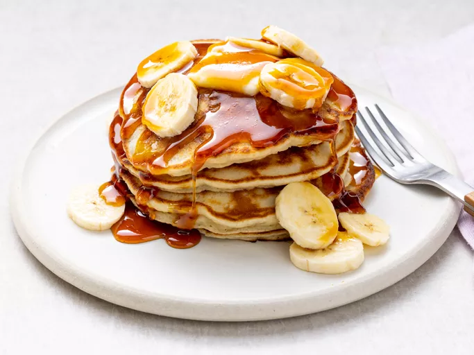

Pancakes

Description
Pancakes are a classic breakfast food that is enjoyed by many. They are a simple
combination of flour, milk, eggs, and butter that are cooked on a griddle or in a
frying pan. Pancakes can be served with a variety of toppings such as maple syrup,
fruit, whipped cream, or chocolate chips. They are a great way to start the day and
are a favorite for both kids and adults.
Back to Home
Ingredients
- 1 cup all-purpose flour
- 2 tablespoons sugar
- 2 teaspoons baking powder
- 1/2 teaspoon salt
- 1 egg
- 3/4 cup milk
- 1/4 cup vegetable oil
Directions
- In a large bowl, sift together the flour, sugar, baking powder, and salt.
- In a separate bowl, beat the egg and then stir in the milk and oil.
- Pour the wet ingredients into the dry ingredients and stir until just combined.
- Heat a lightly oiled griddle or frying pan over medium-high heat.
- Pour or scoop the batter onto the griddle, using approximately 1/4 cup for each pancake.
- Cook until bubbles form on the surface of the pancake, then flip and cook until browned on the other side.
- Serve hot with your favorite toppings.